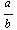
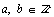

There are some important properties that we would like to see number sets have. The first is that of closure. A number set is closed under an operation if performing that operation on any two numbers in the set gives another number in the set.
The counting numbers are a relatively uninteresting group of numbers as they have none of the properties that make number sets interesting. However, for the record, these are the numbers with which most people learn to count.
Counting Numbers {1, 2, 3, 4, 5, 6, ...}
Under which of the four operations are the counting numbers closed? With a little effort it should be obvious that the counting numbers are closed under addition and multiplication but not under subtraction or division. That they are not closed under subtraction can be seen by subtracting any number from itself. The result is 0, and the counting numbers do not include the number 0. Dividing one counting number by a number larger that itself will yield a number that is less than 1. Notice that the smallest number in this set is 1. Therefore, the counting numbers are not closed under division either. There are certainly counting numbers that, under division or subtraction, yield another counting number, however, for a number set to be closed, we must be able to perform the operation on any two numbers in the set and always get another number from the set.
The whole numbers are a much more interesting group of numbers, specifically the ideas behind their divisibility is a important stepping stone in the discussion of factoring polynomials. This will be discussed in Chapter 10 on Number Theory. Being able to perform the basic arithmetic operations on whole numbers is certainly prerequisite to the study of algebra. That is, one should be very comfortable adding subtracting, multiplying and dividing whole numbers before continuing on in this book. There will be no discussion of these concepts in this book. The set of whole numbers is listed below and is simply the counting numbers but including the number 0.
Whole Numbers {0, 1, 2, 3, 4, 5, ...}
Under which of the four operations is the set of whole numbers closed? Again the whole numbers are not closed under either addition or subtraction, however it does have an additive identity.
The integers are the first really interesting number set that we will address in this book. Integers are an incredibly important concept to master as the rules that we will use for integers will be the rules that govern the rest of our discussion of algebra. The set of integers is composed of the positive and negative whole numbers including zero. It is worthy of immediate note that the set of integers is closed under addition and multiplication, but also subtraction. Furthermore, the integers contain both an additive and multiplicative identity as well as additive inverses for all numbers in the set. Following is a list of the integers.
Integers (÷½) = {..., -3, -2, -1, 0, 1, 2, 3,...}
The next chapter will have a thorough discussion on how to correctly perform the arithmetic operations on integers as well as some good ways to understand these on a number line or with integer chips. These rules however apply to all numbers sets from integers to complex numbers and even to polynomials although these are more difficult to handle.
The rational numbers are the first set of numbers that are closed under addition, subtraction, multiplication and division. They are however a little more difficult to list. Instead, the following is a definition of the rational numbers.
Definition of Rational Numbers (Q)
A number, n, is a rational number if it can be written as a ratio of integers. That is,
n is rational if it can be written as  where 
Rational numbers are more commonly referred to as fractions, although we must remember that fractions include numbers that are larger than zero. Many decimals are also rational numbers because they also can be written as a ratio of integers. Specifically, any decimal that terminates (ends) or repeats, can be written as a ratio of integers. In addition to integers, the next chapter will contain a brief discussion on changing numbers from fractional to decimal form and back. Additionally, we will comment on mixed numbers and improper fractions.